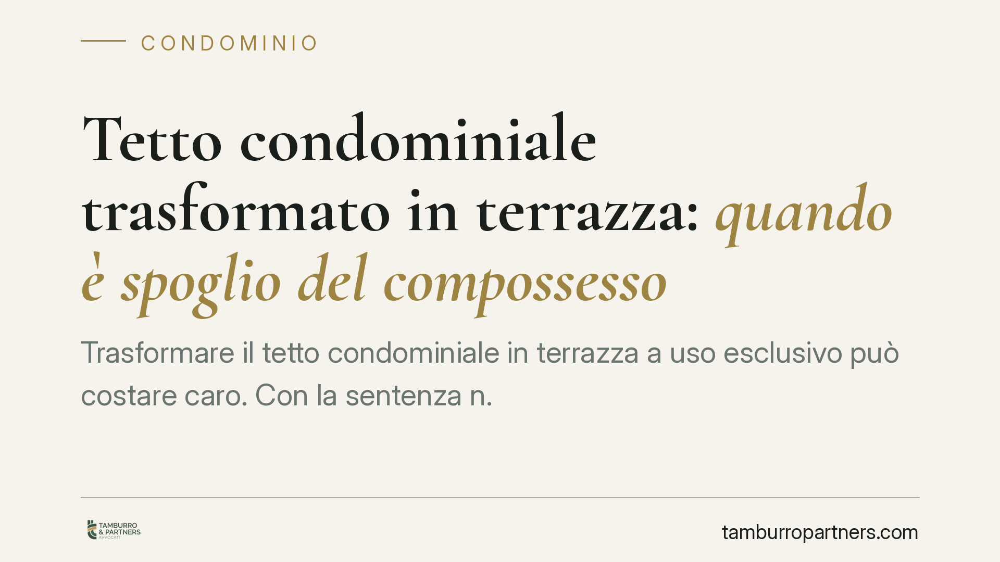

Tetto condominiale trasformato in terrazza: quando è spoglio del compossesso
Trasformare il tetto condominiale in terrazza a uso esclusivo può costare caro. Con la sentenza n. 15515/2026 la Cassazione conferma che l'operazione integra spoglio del compossesso, azionabile in via possessoria entro un anno. E il dato conta: la tutela scatta a prescindere dai titoli edilizi rilasciati dal Comune. Vediamo perché e quali margini di reazione restano agli altri condòmini.

Il caso deciso dalla Cassazione
La vicenda è ricorrente nei condomìni. La proprietaria di un attico interviene sul tetto dell'edificio - bene comune per natura ai sensi dell'art. 1117 c.c. - trasformandolo in terrazza a proprio uso esclusivo. Una condòmina del piano inferiore reagisce, lamentando di essere stata privata del compossesso sul lastrico.
La Corte di Cassazione, con la sentenza n. 15515/2026, conferma un principio già consolidato: l'appropriazione di una porzione di tetto comune, sottratta al godimento degli altri partecipanti, integra uno spoglio del compossesso. Non rileva che l'opera sia stata assentita dal Comune. Il piano urbanistico-edilizio e quello civilistico dei rapporti tra condòmini restano distinti: un permesso di costruire non legittima l'invasione di un diritto altrui.
Inquadramento normativo
Due le norme cardine.
L'art. 1102 c.c. disciplina l'uso della cosa comune: ciascun partecipante può servirsene, ma a due condizioni. Non deve alterarne la destinazione e non deve impedire agli altri di farne pari uso. Trasformare il tetto in terrazza esclusiva viola entrambi i limiti: muta la funzione del bene (copertura dell'edificio) e ne preclude il godimento agli altri condòmini.
L'art. 1168 c.c. offre lo strumento di reazione. È l'azione di reintegrazione (o "di spoglio"): chi è stato violentemente o clandestinamente privato del possesso - qui, del compossesso - può chiederne la restituzione. Il termine è di un anno dallo spoglio. È un termine di decadenza: decorso inutilmente, l'azione possessoria non è più esperibile.
Due precisazioni sul concetto di possesso. Il *compossesso* è la situazione in cui più soggetti esercitano insieme il potere di fatto su uno stesso bene. Lo *spoglio* è la privazione, totale o parziale, di quel potere. Occupare in via esclusiva ciò che era goduto da tutti realizza appunto uno spoglio parziale.
Implicazioni pratiche
Per il condòmino che subisce l'intervento il messaggio è chiaro: la tutela possessoria è disponibile e rapida, ma va attivata per tempo. Il termine annuale è breve e non ammette recuperi.
Per chi realizza l'opera, il permesso comunale non è uno scudo. La regolarità edilizia non sana l'illegittimità civilistica verso gli altri partecipanti. Il rischio è la condanna alla rimozione delle opere e al ripristino dello stato dei luoghi.
Da distinguere il piano possessorio da quello petitorio. L'azione di spoglio protegge la situazione di fatto, non accerta la titolarità del diritto. Chi vince in via possessoria ottiene il ripristino; la questione della proprietà o dei limiti d'uso può essere affrontata, separatamente, con l'azione petitoria (fondata sul diritto e non soggetta al termine annuale).
Attenzione anche al momento in cui decorre l'anno. Nelle opere clandestine il termine parte non dall'esecuzione, ma dalla scoperta dello spoglio da parte del compossessore. È un profilo spesso decisivo e va documentato.
Cosa fare in concreto
- Documentate subito lo stato dei luoghi. Fotografie datate, eventuali rilievi tecnici e testimonianze servono a provare l'uso comune preesistente e la data della scoperta.
- Verificate il termine annuale. Individuate con precisione quando l'intervento è stato eseguito o, se clandestino, quando ne avete avuto conoscenza. È il dato che condiziona l'azione possessoria.
- Non fatevi bloccare dal permesso di costruire. La verifica del titolo edilizio è utile, ma non pregiudica la tutela civilistica del compossesso.
- Valutate anche la via petitoria. Se l'anno è decorso, resta la possibilità di agire a tutela del diritto sulla cosa comune, con regole e tempi diversi.
- Segnalate all'amministratore. L'intervento su un bene comune riguarda l'intero condominio: l'assemblea può deliberare azioni a tutela delle parti comuni.
Consigliamo di far esaminare la singola situazione da un professionista prima di ogni iniziativa: la scelta tra tutela possessoria e petitoria e il calcolo dei termini dipendono da circostanze concrete non generalizzabili.
Disclaimer
Contributo informativo a cura di Tamburro & Partners - Avv. Giuseppe Tamburro. Non costituisce parere legale.
Ogni condominio ha una storia a sé.
Se gestisci un'amministrazione e vuoi un confronto su una specifica questione condominiale, scrivi allo studio. Ti rispondiamo entro un giorno lavorativo.